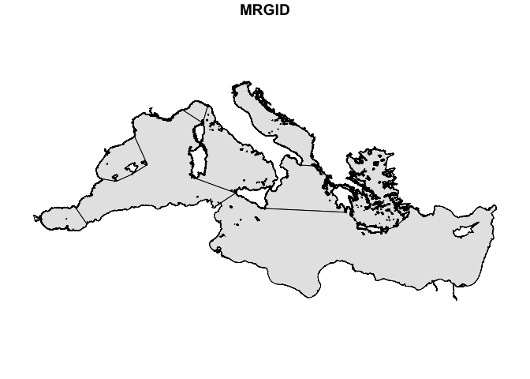
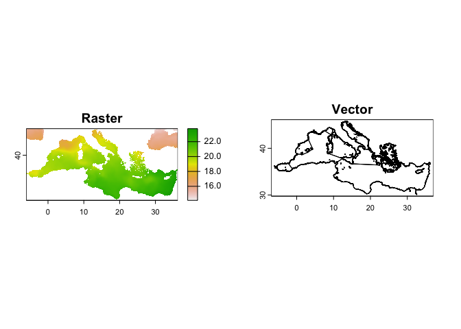
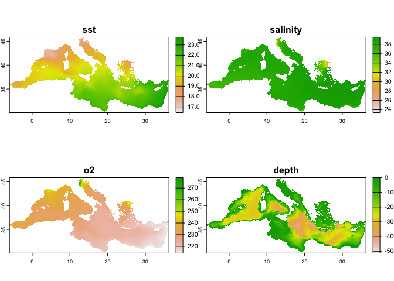
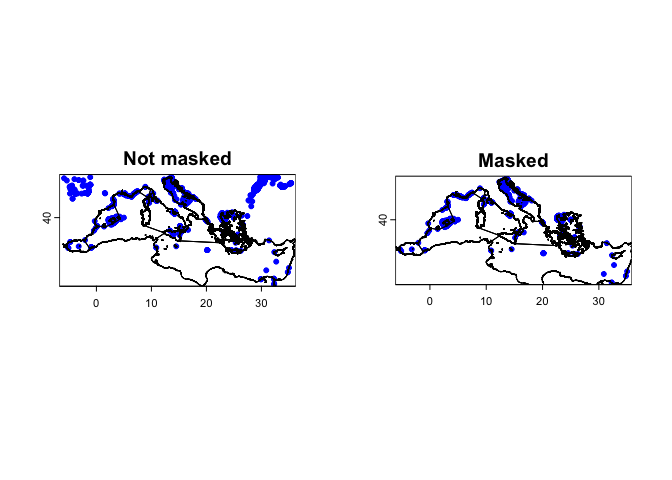
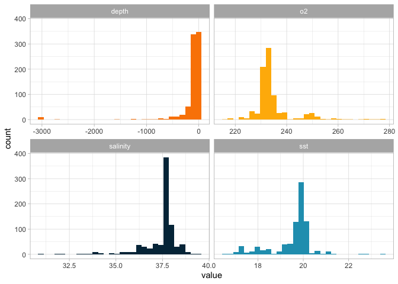
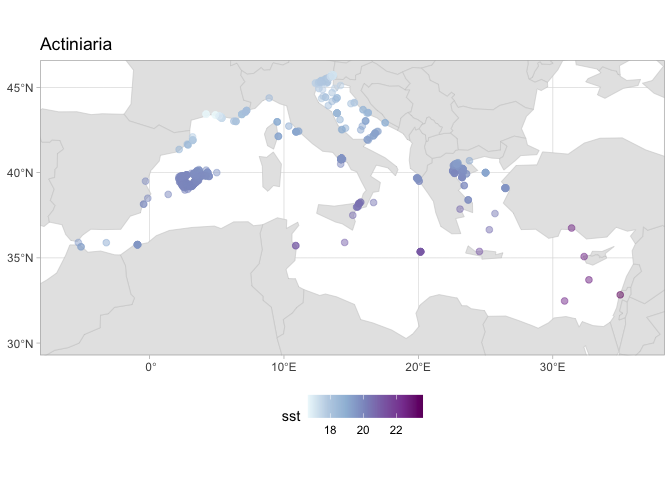

Matching environmental information with OBIS occurrences
Obtaining environmental information for species occurrences
For many research questions, we are interested in the environmental conditions where a certain species, population, or community lives. OBIS already provides some environmental data along with the records. For example, if you download records for the species Actinia equina, you can obtain values for sea surface temperature (SST), salinity (SSS), and bathymetry:
library(robis)
occ <- occurrence("Actinia equina")
## Retrieved 5000 records of approximately 9583 (52%)Retrieved 9583 records of
## approximately 9583 (100%)
head(occ[,c("sst", "sss", "bathymetry")], 4)
## # A tibble: 4 × 3
## sst sss bathymetry
## <dbl> <dbl> <dbl>
## 1 10.6 35.2 -50
## 2 10.6 34.8 -49
## 3 NA NA -7
## 4 11.4 34.2 -4However, there are many other variables of interest. Also, depending on your question, you may need another source of environmental information or a different resolution. Here we will explore how to extract environmental information for these occurrences. This tutorial will explore extracting data from Bio-ORACLE, which provides essential physical, chemical, biological, and topographic data layers with global extent and uniform resolution. You can use the same code to extract data from any other data source in raster format.
Download data from Bio-ORACLE
The new version of Bio-ORACLE (v3) is hosted in an ERDDAP server, which enable us to download only the data for the region and time period we need. We can use the package biooracler to download the layers. First install the package. We also load the terra package, for spatial operations (see explanation on the next section).
# install.packages("devtools")
devtools::install_github("bio-oracle/biooracler")
library(biooracler)
library(terra)
## terra 1.7.71
##
## Attaching package: 'terra'
## The following object is masked from 'package:robis':
##
## areaFor our exercise we will obtain the data for species occurring in the Mediterranean sea. Thus, we can download the data for only this region. We download a shapefile of this area using the Marine Regions.
# Install the package
install.packages("mregions2", repos = "https://ropensci.r-universe.dev")
install.packages("wrapr")
library(mregions2)
## Warning: package 'mregions2' was built under R version 4.3.3
library(sf)
## Linking to GEOS 3.11.0, GDAL 3.5.3, PROJ 9.1.0; sf_use_s2() is TRUE
med <- gaz_search(1905) %>%
gaz_geometry()
plot(med, max.plot = 1, col = "grey90")
From the shapefile, we can see which are the limits (longitude and latitude) for this area:
limits <- st_bbox(med)
limits
## xmin ymin xmax ymax
## -6.032549 30.068087 36.215729 45.808914With this information we can then download the data. We will obtain 4 parameters: SST, salinity, bathymetry and oxygen. You can see the dataset IDs using the function list_layers
head(list_layers()[,1:2])
## Registered S3 method overwritten by 'hoardr':
## method from
## print.cache_info httr
## # A tibble: 6 × 2
## dataset_id title
## <chr> <chr>
## 1 tas_baseline_2000_2020_depthsurf Bio-Oracle AirTemperature [depthSurf] Baseli…
## 2 tas_ssp119_2020_2100_depthsurf Bio-Oracle AirTemperature [depthSurf] SSP119…
## 3 tas_ssp126_2020_2100_depthsurf Bio-Oracle AirTemperature [depthSurf] SSP126…
## 4 tas_ssp245_2020_2100_depthsurf Bio-Oracle AirTemperature [depthSurf] SSP245…
## 5 tas_ssp370_2020_2100_depthsurf Bio-Oracle AirTemperature [depthSurf] SSP370…
## 6 tas_ssp460_2020_2100_depthsurf Bio-Oracle AirTemperature [depthSurf] SSP460…
dataset_ids <- c("thetao_baseline_2000_2019_depthsurf",
"so_baseline_2000_2019_depthsurf",
"o2_baseline_2000_2018_depthsurf")
time = c('2010-01-01T00:00:00Z', '2010-01-01T00:00:00Z')
latitude = limits[c(2,4)]
longitude = limits[c(1,3)]
constraints = list(time, latitude, longitude)
names(constraints) = c("time", "latitude", "longitude")
# We also need to define which variables are needed from each one.
# In this case we will download the mean for all
# You can see the variables by using info_layer:
info_layer(dataset_ids[1])
## <ERDDAP info> thetao_baseline_2000_2019_depthsurf
## Base URL: http://erddap.bio-oracle.org/erddap
## Dataset Type: griddap
## Dimensions (range):
## time: (2000-01-01T00:00:00Z, 2010-01-01T00:00:00Z)
## latitude: (-89.975, 89.975)
## longitude: (-179.975, 179.975)
## Variables:
## thetao_ltmax:
## Units: degree_C
## thetao_ltmin:
## Units: degree_C
## thetao_max:
## Units: degree_C
## thetao_mean:
## Units: degree_C
## thetao_min:
## Units: degree_C
## thetao_range:
## Units: degree_C
variables <- c("thetao_mean", "so_mean", "o2_mean")
# To download, we need to pass the ids and variables to the function, one each time
# You can do that using a for loop or mapply:
download_data <- function(id, variable) {
download_layers(id, variable, constraints, directory = ".")
}
env_layers <- mapply(download_data, dataset_ids, variables)
## Selected dataset thetao_baseline_2000_2019_depthsurf.
## Dataset info available at: http://erddap.bio-oracle.org/erddap/griddap/thetao_baseline_2000_2019_depthsurf.html
## Selected 1 variables: thetao_mean
## Selected dataset so_baseline_2000_2019_depthsurf.
## Dataset info available at: http://erddap.bio-oracle.org/erddap/griddap/so_baseline_2000_2019_depthsurf.html
## Selected 1 variables: so_mean
## Selected dataset o2_baseline_2000_2018_depthsurf.
## Dataset info available at: http://erddap.bio-oracle.org/erddap/griddap/o2_baseline_2000_2018_depthsurf.html
## Selected 1 variables: o2_mean
# We can easily convert the list of SpatRasters into a multilayer SpatRaster using `rast`
env_layers <- rast(env_layers)
env_layers
## class : SpatRaster
## dimensions : 316, 846, 3 (nrow, ncol, nlyr)
## resolution : 0.05, 0.05 (x, y)
## extent : -6.05, 36.25, 30.05, 45.85 (xmin, xmax, ymin, ymax)
## coord. ref. : lon/lat WGS 84
## sources : 605fc9b38decbff0cc9dbf7466ce9763.nc
## 0e41eda3a088ee25b29d4cf81ce5dd28.nc
## a43ce5ec09281f9f807682ee717c2f5d.nc
## varnames : thetao_mean (Average OceanTemperature)
## so_mean (Average Salinity)
## o2_mean (Average DissolvedMolecularOxygen)
## names : thetao_bas~_depthsurf, so_baselin~_depthsurf, o2_baselin~_depthsurf
## unit : degree_C, PSU, MMol' 'M-3
## time : 2010-01-01 UTCFor bathymetry we need to supply a different time:
constraints$time <- c("1970-01-01T00:00:00Z", "1970-01-01T00:00:00Z")
bath <- download_layers("terrain_characteristics",
"bathymetry_mean",
constraints, directory = ".")
## Selected dataset terrain_characteristics.
## Dataset info available at: http://erddap.bio-oracle.org/erddap/griddap/terrain_characteristics.html
## Selected 1 variables: bathymetry_mean
bath
## class : SpatRaster
## dimensions : 316, 846, 1 (nrow, ncol, nlyr)
## resolution : 0.05, 0.05 (x, y)
## extent : -6.05, 36.25, 30.05, 45.85 (xmin, xmax, ymin, ymax)
## coord. ref. : lon/lat WGS 84
## source : 9e5d27b9659e2585cd3050d884cf5151.nc
## varname : bathymetry_mean (Bathymetry Mean)
## name : bathymetry_mean
## unit : m
## time : 1970-01-01 UTCThe terra package
For processing the raster files we will use the terra package. This package enable spatial operations on both rasters and vectors (shapefiles). Other packages exist for raster operations (e.g. stars), but for many of the main operations terra provides a simple syntax and is very fast. To learn how to use terra, a good resource is this website: rspatial.org/terra
Here we will use both rasters and vectors. In geospatial data, rasters represent data as a grid of cells or pixels, each with a specific value, suitable for continuous data like temperature or elevation. Rasters can have multiple layers, as the one we loaded as env_layers. Vectors represent data as points, lines, or polygons. In our case, we have a vector for the boundaries of the Mediterranean which we loaded using sf. We can convert to the terra format, SpatVector using vect:
med <- vect(med)
par(mfrow = c(1,2))
plot(env_layers[[1]], main = "Raster")
plot(med, main = "Vector")
We will mask our raster, to ensure that we only have the data for the areas of the Mediterranean. To make easier to extract the data all at once, we will join the bathymetry layer with the others:
all_layers <- c(env_layers, bath)
all_layers <- terra::mask(all_layers, med)
# Change names for easier handling
names(all_layers) <- c("sst", "salinity", "o2", "depth")
plot(all_layers, main = names(all_layers))
TIP: Note that for mask we used the package prefix (i.e. terra::mask()). Some names such as mask or extract are also used by other packages, namely those from tidyverse. Using the prefix avoid that the wrong function is used.
Extracting data
Let’s download some data from OBIS now. We will get data for all species in the order Actiniaria within that region:
target_area <- st_as_text(st_as_sfc(st_bbox(env_layers[[1]])))
actiniaria <- occurrence("Actiniaria", geometry = target_area,
# Limit to some fields that we need here
fields = c("taxonID", "scientificName", "decimalLongitude", "decimalLatitude", "speciesid"))
## Retrieved 2289 records of approximately 2289 (100%)
# Filter for only those at species level
actiniaria <- actiniaria[!is.na(actiniaria$speciesid), ]For extraction operations with terra you can work with data.frames. But we will convert it to a SpatVector to use some other interesting functions. For example, we can mask our points according to the Mediterranean borders.
actiniaria_vec <- vect(actiniaria, geom = c("decimalLongitude", "decimalLatitude"), crs = "EPSG:4326")
actiniaria_vec_filt <- terra::mask(actiniaria_vec, med)
par(mfrow = c(1,2))
plot(actiniaria_vec, pch = 20, cex = 1, col = "blue", main = "Not masked");lines(med)
plot(actiniaria_vec_filt, pch = 20, cex = 1, col = "blue", main = "Masked");lines(med)
Now we are ready to extract the data. This is very simple:
extracted_data <- terra::extract(all_layers, actiniaria_vec_filt, ID = FALSE)
head(extracted_data)
## sst salinity o2 depth
## 1 19.87718 37.68975 232.8744 -82.69444
## 2 20.48257 38.04504 225.7063 -1223.72217
## 3 19.97063 37.62606 232.0623 -159.08333
## 4 19.63475 37.98786 235.2972 -39.00000
## 5 19.51212 36.99345 233.4251 0.00000
## 6 20.04503 37.58446 231.0133 -52.30556As you can see, it extracted the environmental infromation for all points. We can get a good summary with summary
summary(extracted_data)
## sst salinity o2 depth
## Min. :16.66 Min. :30.88 Min. :216.9 Min. :-3020.19
## 1st Qu.:19.41 1st Qu.:37.47 1st Qu.:231.1 1st Qu.: -87.08
## Median :19.83 Median :37.65 Median :232.6 Median : -57.72
## Mean :19.51 Mean :37.43 Mean :234.5 Mean : -131.32
## 3rd Qu.:20.00 3rd Qu.:37.83 3rd Qu.:235.3 3rd Qu.: -29.36
## Max. :23.61 Max. :39.35 Max. :278.3 Max. : 0.00
## NA's :135 NA's :135 NA's :135 NA's :135Note that we have 135 NA points, i.e. with no information. Those points are probably on land. You may chose to remove those or you can find the nearest valid point. In our case we will simply remove them.
actiniaria_vec_filt <- cbind(actiniaria_vec_filt, extracted_data)
actiniaria_vec_filt <- actiniaria_vec_filt[!is.na(actiniaria_vec_filt$sst),]Plotting this information
There are different ways to plot this information. A good way of having an overview is by using a histogram. We will use dplyr, tidyr and ggplot2 for that.
library(dplyr)
##
## Attaching package: 'dplyr'
## The following objects are masked from 'package:terra':
##
## intersect, union
## The following objects are masked from 'package:stats':
##
## filter, lag
## The following objects are masked from 'package:base':
##
## intersect, setdiff, setequal, union
library(tidyr)
##
## Attaching package: 'tidyr'
## The following object is masked from 'package:terra':
##
## extract
library(ggplot2)
extracted_data <- as.data.frame(actiniaria_vec_filt) %>%
select(sst, salinity, o2, depth)
extracted_data_long <- pivot_longer(extracted_data, cols = 1:4, names_to = "variable", values_to = "value")
head(extracted_data_long)
## # A tibble: 6 × 2
## variable value
## <chr> <dbl>
## 1 sst 19.9
## 2 salinity 37.7
## 3 o2 233.
## 4 depth -82.7
## 5 sst 20.5
## 6 salinity 38.0
ggplot(extracted_data_long) +
geom_histogram(aes(value, fill = variable)) +
scale_fill_manual(values = c("#fb8500", "#ffb703", "#023047", "#219ebc")) +
theme_light() + theme(legend.position = "none") +
facet_wrap(~ variable, scales = "free_x")
## `stat_bin()` using `bins = 30`. Pick better value with `binwidth`.
Another possible way is to display geographically. We can do that for temperature for example:
# We get a shapefile of the continents
wrld <- rnaturalearth::ne_countries(returnclass = "sf")
# Convert the data to sf format, as ggplot2 have nice features for sf
actiniaria_vec_filt <- st_as_sf(actiniaria_vec_filt)
ggplot() +
geom_sf(data = wrld, color = "grey80", fill = "grey90") +
geom_sf(data = actiniaria_vec_filt, aes(color = sst), size = 2, alpha = .5) +
scale_color_distiller(palette = "BuPu", direction = 1) +
coord_sf(xlim = limits[c(1,3)], ylim = limits[c(2,4)]) +
ggtitle("Actiniaria") +
theme_light() +
theme(legend.position = "bottom")
In a next tutorial we will explore how to download environmental data from other sources, like Copernicus or NOAA, what opens many possibilities of research.